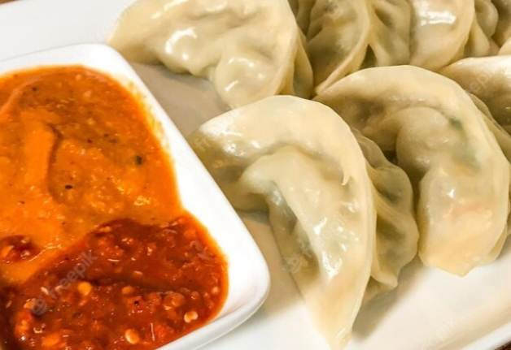

Chicken Momo Recipe
Ingredients
For Dough
- 2 cups All Purpose flour
- 1/2 tsp salt
For Filling
- 1 cup cabbage grated.
- 1 tbsp butter
- ½ cup Onion finely chopped
- 1 tsp garlic chopped or crushed.
- ½ cup finely chopped spring onions
- 1 tsp soya sauce
- 1 tsp cumin powder
- 1 tsp meat masala
- ½ cup finely chopped cilantro
- 2 lb. ground chicken or meat of your choice
Directions to make Chicken Momo
- Mix all-purpose flour, salt, and knead to a stiff dough with water.
- In a big bowl add all the vegetables and ground chicken, salt to taste, soya sauce, all spices and butter and mix until everything looks nice and juicy.
- Roll the dough thin and round with size 4”- 5.”
- Make the edges of rolled dough wet and place some filling in the center. Make sure not to put too much filling which may be hard to wrap.
- Bring the edges together twisting to cover the filling. You can give your own shape and finish wrapping all momos.
- Apply little oil to base of steamer and place all wrapped momos in steamer.
- Steam those momos in for about 20 mins and serve with some tomato chutney and chicken soup(optional).



Momo ready to serve